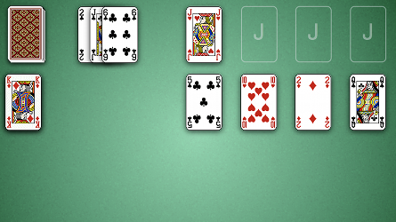
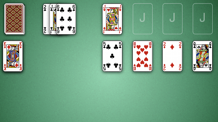

How to Play Canfield
Game Setup
Stock: The stock is the pile of face down cards in the top left corner of the board. When the player
clicks on the stock, 3 cards are dealt face up to the waste.
Waste: The waste is the pile of 3 face up cards immediatly to the right of the stock. Only the top most card in the waste is playable.
Foundations: The foundations are the 4 areas in the top right hand corner of the table. Initially a single card is dealt to the left-most foundation. This card determines the face value that must start the other 3 foundations. As the game progresses the foundaions will be built up by suit wrapping around from King to Ace.
Reserve: The reserve is a pile of 13 face up card below the stock. Cards from the reserve are used to fill empty tableau and may also be used to build down a tableau or placed into a foundation.
Tableau: The tableau are the 4 piles of cards stacked along the right side of the table, below the foundations. The tableaus may be built down by alternating color with Ace wrapping around to King.

Waste: The waste is the pile of 3 face up cards immediatly to the right of the stock. Only the top most card in the waste is playable.
Foundations: The foundations are the 4 areas in the top right hand corner of the table. Initially a single card is dealt to the left-most foundation. This card determines the face value that must start the other 3 foundations. As the game progresses the foundaions will be built up by suit wrapping around from King to Ace.
Reserve: The reserve is a pile of 13 face up card below the stock. Cards from the reserve are used to fill empty tableau and may also be used to build down a tableau or placed into a foundation.
Tableau: The tableau are the 4 piles of cards stacked along the right side of the table, below the foundations. The tableaus may be built down by alternating color with Ace wrapping around to King.

Rules
Canfield is played with a single deck of cards. The goal of the game is to place all 52 cards into the
foundations. The foundations are built up by suit, starting with the value determined by the initial
foundation card dealt to the left-most foundation at the start of the game. So for example, in the image
above, the initial foundation card is a Jack. So every foundation must begin with a Jack and the foundations
will be built with Jack, Queen, King, Ace, 2, 3, 4, 5, 6, 7, 8, 9, 10.
The tablueas are used to organize columns of cards until it becomes possible to place them into the foundations. Columns can be built up on the tableau by alternating color as illustrated, with Ace wrapping around to King. If a tableau becomes empty, it will immediately be filled from the reserve. If the reserve is empty, you are free to fill the tableau with any card you want.
The tablueas are used to organize columns of cards until it becomes possible to place them into the foundations. Columns can be built up on the tableau by alternating color as illustrated, with Ace wrapping around to King. If a tableau becomes empty, it will immediately be filled from the reserve. If the reserve is empty, you are free to fill the tableau with any card you want.
Scoring
Canfield was originally a Casino game that cost $50 to play. The player was payed $5 for every card placed into
the foundations. Notice the player is automatically awarded $5 for the intial card deal to the foundation.
So the player begins the game with a score of -45 and is awarded 5 points for every card in the foundation.